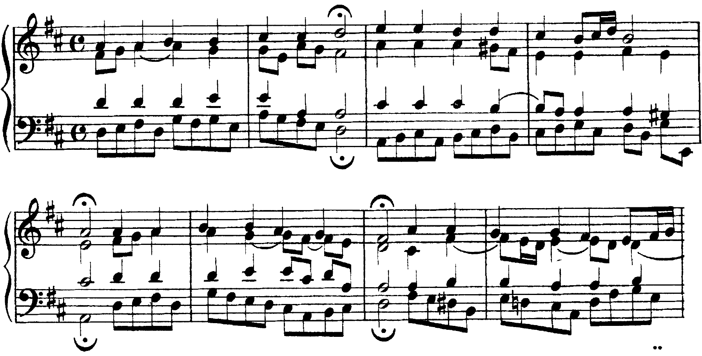

La triade di sopratonica nel modo maggiore: la funzione di sottodominante, la direzione verso la dominante, il primo rivolto e i suoi raddoppi, in un esempio di otto battute e in un corale di Bach.
Richiede dopo di sè l’accordo perfetto dominante o il suo primo rivolto, coi quali si collega sempre melodicamente.
N. Rimskij-Korsakov, Trattato pratico d’armonia, § 29
A1Armonizziamo una melodia con le triadi secondarie, pp. 2–7
Sezione A, unità 1, lezione 1 «Melodie in maggiore con la triade di secondo grado», pp. 2–3: il II accanto alle primarie, con la melodia armonizzata passo per passo. Il II e il suo primo rivolto sono già nel volume del 3° anno, sezione A, unità 6, pp. 52–67.
Il II è la triade di sopratonica: in do maggiore re–fa–la, una triade minore. È la «triade secondaria che svolge, insieme al quarto, la funzione di sottodominante»; condivide due note con il IV e una con il V. Fra le sottodominanti «solo il IV può tornare al I, mentre il ii, che ha un’affinità armonica debole con la tonica, tende sempre al V» (D’Urso–Bertolini, 4° anno, p. 2). Rimskij-Korsakov lo fa seguire al I o al suo primo rivolto, al IV o al VI, e gli fa seguire la dominante (§ 29). Nella teoria funzionale è il parallelo della sottodominante, Sp (D. de la Motte, Manuale di armonia, p. 26).
Le due frasi hanno lo stesso soprano e lo stesso piano funzionale: tonica, sottodominante, dominante, tonica. Cambia l’accordo di sottodominante. Il do del soprano alla b. 1 è la fondamentale del IV e la terza del II; il mi della b. 3 è la terza del IV e la quinta del II⁶. Nella seconda frase il basso sale la–re invece di do–re, e il colore della sottodominante è minore. In entrambi i casi il II va alla dominante, con due note comuni o con il moto contrario delle voci superiori rispetto al basso.
Il II che torna alla tonica (II–I): la condotta può essere corretta, ma la sottodominante resta senza seguito e la frase non procede. Dopo il II si scrive il V, il V⁶ o il 6/4 cadenzale; se l’armonia deve tornare al I, l’accordo giusto è il IV.
Nel II⁶ il basso è la terza dell’accordo, cioè il IV grado della scala: in do maggiore fa–la–re. «L’accordo di sesta di II grado si usa tanto nel modo maggiore quanto nel minore, in qualità d’armonia sottodominante» e precede la dominante nella cadenza (Rimskij-Korsakov, § 29 b). Il basso sale di grado al V: è la forma più frequente del II, perché evita i due salti re–sol–do dello stato fondamentale.
I raddoppi. Il libro dà tre disposizioni del II⁶: con la terza raddoppiata (cioè il basso, IV grado della scala), con la fondamentale raddoppiata in ottava, con la fondamentale raddoppiata all’unisono (3° anno, lez. 24 «L’accordo di secondo grado in primo rivolto», p. 60). Rimskij-Korsakov ammette i due raddoppi e rende necessario quello della terza quando al II⁶ segue il 6/4 cadenzale (§ 29 b, 3°): è il caso dei profili cadenzali della U4.
Alla b. 2 il II⁶ arriva dal VI con una nota comune (il si, che resta al contralto) e va al V con il basso che sale sol–la. Alla b. 4 il II⁶ segue il IV sullo stesso basso sol: delle tre note della triade ne cambia una sola, il re che diventa mi. La b. 5 mostra il II in stato fondamentale dopo il VI: il basso sale si–mi e poi scende di quinta al la. In tutti e quattro i casi il II va alla dominante.
Far salire con il basso la voce superiore che ne raddoppia la nota. Nel passaggio II⁶–V il basso sale dal IV al V grado; se anche il soprano o una parte interna porta il IV grado e sale al V, nascono le ottave parallele. La voce che raddoppia il basso scende al II grado della scala (la quinta del V) oppure resta ferma e diventa la settima del V⁷.
Due ascolti dei primi quattro versi. Al primo si contano le corone e si dice per ciascuna se la frase chiude sulla tonica o sulla dominante. Al secondo si segue il contralto della b. 1: il sol che si tiene mentre il basso passa dal sol al la.

Il basso del corale procede per crome, e le armonie vanno lette sui movimenti. Alla b. 1, sul quarto movimento, il basso porta il sol sotto mi–sol–si: è il II⁶, e il sol del contralto resta fermo nella b. 2, dove diventa la settima del V⁷ (la–do♯–mi–sol). È il percorso del II verso la dominante, e insieme il caso della settima preparata della U2. La settima scende al fa♯ della tonica attraverso un giro di crome del contralto, e il primo verso chiude sulla corona della b. 2.
Alla b. 4, sull’ultimo movimento, compare mi–sol♯–si: il II con la terza alzata, cioè la dominante del V, che porta alla corona sul la della b. 5. La frase si ferma sulla dominante. Nelle bb. 6 e 8 il II torna in stato fondamentale, con il mi al basso (sul secondo movimento della b. 6, sul primo della b. 8), e va al V⁶₅, con il do♯ al basso; alla b. 9 il V⁷ chiude il quarto verso sulla tonica.
Il II⁷ è la settima di sopratonica, «un’espansione verticale della triade di secondo grado», impiegata «negli stessi contesti in cui è usata la triade da cui deriva: prevalentemente come accordo cadenzale che svolge la funzione di sottodominante e conduce verso la dominante» (4° anno, lez. 26, p. 64). La sua settima richiede «non solo la risoluzione discendente […] ma anche la preparazione»: deve trovarsi nella stessa voce nell’accordo precedente (ivi, p. 65). La forma più usata è il II⁶₅, con il IV grado al basso. Si studia nella U4, ore 22–30.
Il II con la terza alzata non appartiene alla tonalità: in re maggiore mi–sol♯–si è la dominante della dominante, e il sol♯ è la sensibile del la (3° anno, sezione C, unità 1, lezione 2 «Il secondo grado come dominante del quinto», pp. 182–189).
Alla b. 2 il re del contralto c’è già nel VI e resta: sul sol del basso diventa la settima di mi–sol–si–re e scende al do♯ del V. Alla b. 7 lo stesso re arriva dalla tonica e scende allo stesso modo; il V⁷ che segue ha la sua settima (sol) al soprano, e il sol scende al fa♯. Alla b. 5 il sol♯ del soprano sale al la: la dominante della dominante porta al V come una sensibile porta alla tonica.
Attaccare la settima del II⁷ senza prepararla, o farla salire. Prima di scrivere il II⁶₅ si cerca la nota della settima nell’accordo precedente, nella stessa voce; nell’accordo seguente quella voce scende di grado. Nel V del V la terza alzata non si raddoppia e sale.
Armonizza a quattro parti il canto dato, su due righi, un accordo per nota. Usa almeno due volte il II, almeno una in primo rivolto, e portalo ogni volta verso la dominante (il V, oppure il 6/4 cadenzale e poi il V). Sotto il basso scrivi la cifratura.
Prima di correggere controlla tre cose: dopo ogni II c’è la dominante; nel II⁶ la voce che raddoppia il basso non sale con lui; la sensibile sale.
Triade minore sulla sopratonica, funzione di sottodominante (Sp). Arriva dal I, dal IV o dal VI; va alla dominante, mai indietro al I. In primo rivolto il basso è il IV grado: si raddoppia la terza o la fondamentale, e il raddoppio del basso non sale con lui.
Con la settima preparata, il II⁶₅ è il primo accordo di settima che non sta sulla dominante (U4). Con la terza alzata, il II diventa la dominante del V.
La lezione 4 tratta il VI e il III. Dopo la sintesi, il solfeggio di chiusura (parlato, cantato, ritmico) e i compiti scritti per casa.
Sei affermazioni sulla lezione. Chi risponde dice anche perché.
Compiti per la prossima volta
Prendi il canto dato della lezione e armonizzalo due volte: la prima usando solo le triadi primarie, la seconda mettendo il II grado in almeno due punti.
Poi, in tre righe: quale delle due preferisci, e perché. La risposta buona non dice «la seconda è più ricca»: dice in quale battuta il II cambia il senso della frase.
Sul quaderno, a matita. La foto del lavoro finito va su Classroom. Nel Workbook: apri l’esercizio C4-U1-L2-06 ↗
Compiti per la prossima volta
n. 13 e n. 14 parlato · n. 15 e n. 16 cantato · n. 17 e n. 18 ritmico
Ogni pezzo a tempo, senza fermarti: il parlato a nomi, il cantato prendendo il primo suono dalla tastiera, il ritmico battendo la pulsazione.
Scrivi la linea del basso sul quaderno, in chiave di basso: otto battute in 2/4, fa♯ minore. Il primo suono è fa♯. Prima il riferimento, poi tutto due volte, ogni coppia di battute due volte, il collegamento 1–4, 3–6 e 5–8, e tutto per controllare.
Il riferimento: accordo di tonica e primo suono
Il dettato · otto battute
Le sezioni (riferimento, tutto, le coppie, il collegamento) si ascoltano una per una e si ripetono quanto serve; le fasi fanno la procedura della classe, con gli annunci e le pause, da qualunque punto.
Sul quaderno scrivi in testa la sigla C4-D-U01-L2. Si corregge all’inizio della prossima lezione.
Compiti per la prossima volta
Scrivi un contrappunto di terza specie (quattro note contro una) sopra il canto fermo, in modo misolidio (finale sol): undici battute. Comincia su una consonanza perfetta, alla cadenza la sensibile sale alla finale, niente quinte e ottave consecutive.
Sul quaderno, con la sigla C4-CP-U01-L2 in testa; la foto va su Classroom.
Realizza a quattro parti il basso senza numeri: otto battute in 4/4, si♭ maggiore. Trova tu l’accordo di ogni nota (la regola dell’ottava è il punto di partenza) e scrivilo sotto; poi il soprano, poi le voci interne. Accordi che puoi usare: anche le dominanti secondarie.
Sul quaderno, con la sigla C4-BD-U01-L2 in testa; la foto va su Classroom.
Armonizza a quattro parti il canto dato: otto battute in 4/4, fa maggiore. Prima le cadenze, poi il basso per intero, e solo alla fine contralto e tenore. Accordi che puoi usare: anche le dominanti secondarie.
Sul quaderno, con la sigla C4-CD-U01-L2 in testa; la foto va su Classroom.
Scritto: Lo stesso canto dato, due volte (Workbook, esercizio C4-U1-L2-06), sul quaderno; la foto va su Classroom. Solfeggio dal quaderno di lettura: parlato n. 13, 14; cantato n. 15, 16; ritmico n. 17, 18 (a tempo, senza fermarsi). Dettato C4-D-U01-L2 dalla pagina della lezione (sezioni da ascoltare, o le fasi della procedura guidata), sul quaderno con la sigla. Contrappunto di terza specie sul canto fermo (C4-CP-U01-L2). Basso senza numeri da realizzare a quattro parti (C4-BD-U01-L2). Canto dato da armonizzare a quattro parti (C4-CD-U01-L2).
In classe
A nomi, a tempo, con la mano che batte. Chi si ferma riparte dalla battuta dopo.
Apri il n. 10 nel quaderno di lettura ↗ chiave di tenore · 4/4 · la maggiore
In classe
Si prende il tono dalla tastiera, si canta insieme; poi a gruppi.
Apri il n. 11 nel quaderno di lettura ↗ chiave di violino · 3/4 · fa diesis minore
In classe
Tutti insieme, battendo la pulsazione. Poi a file, due battute a testa.